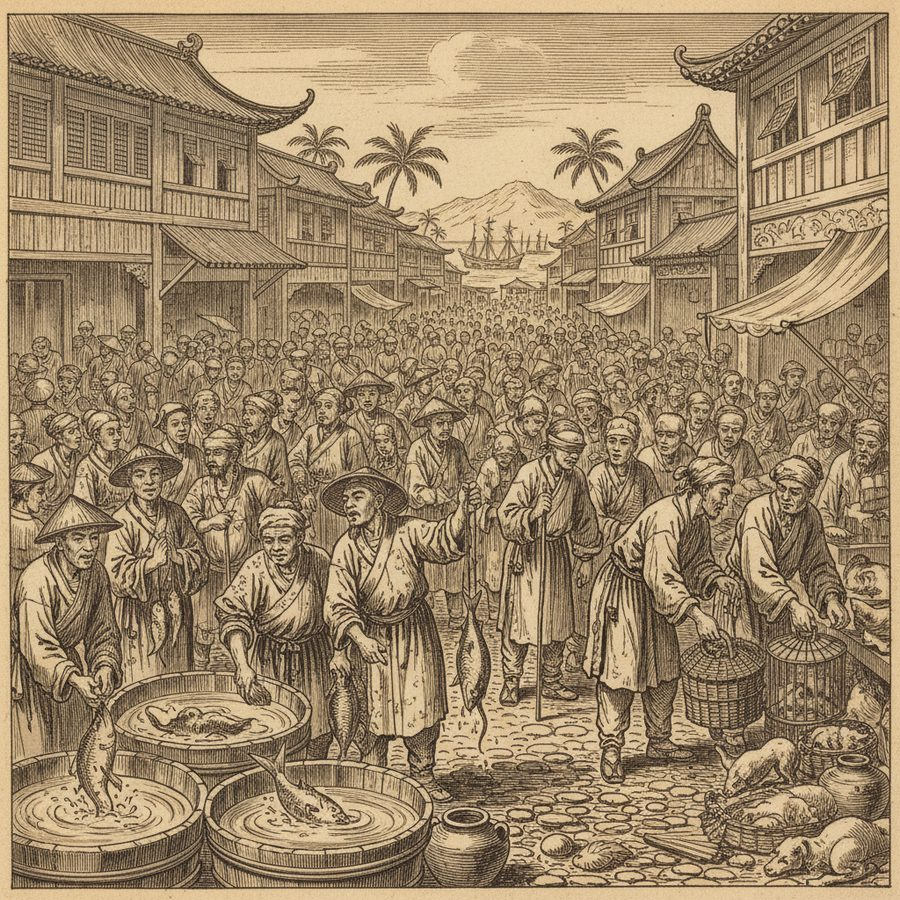
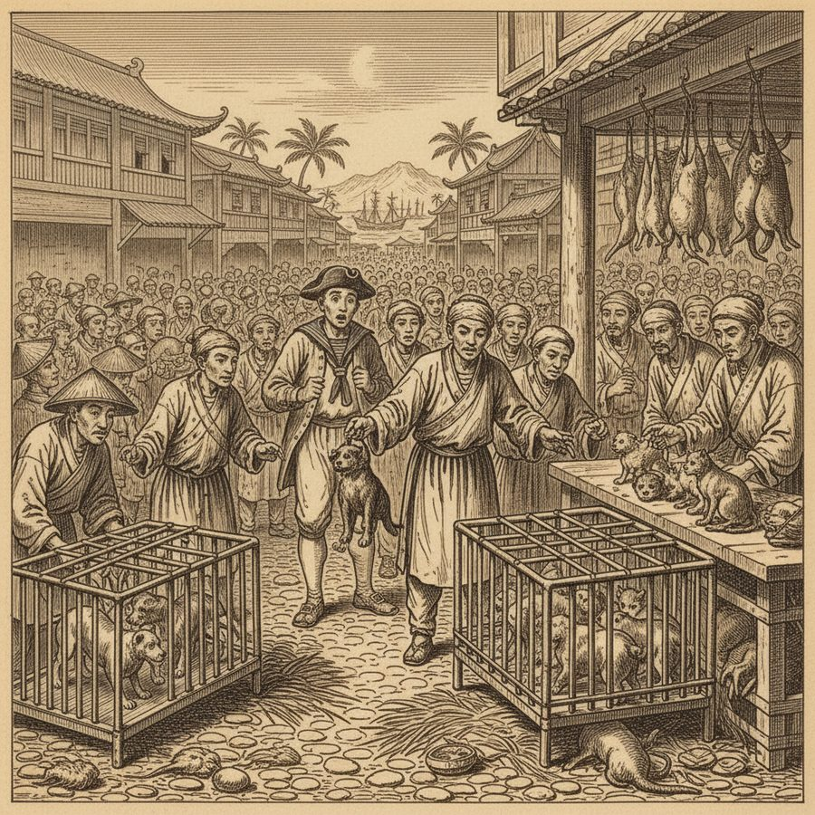
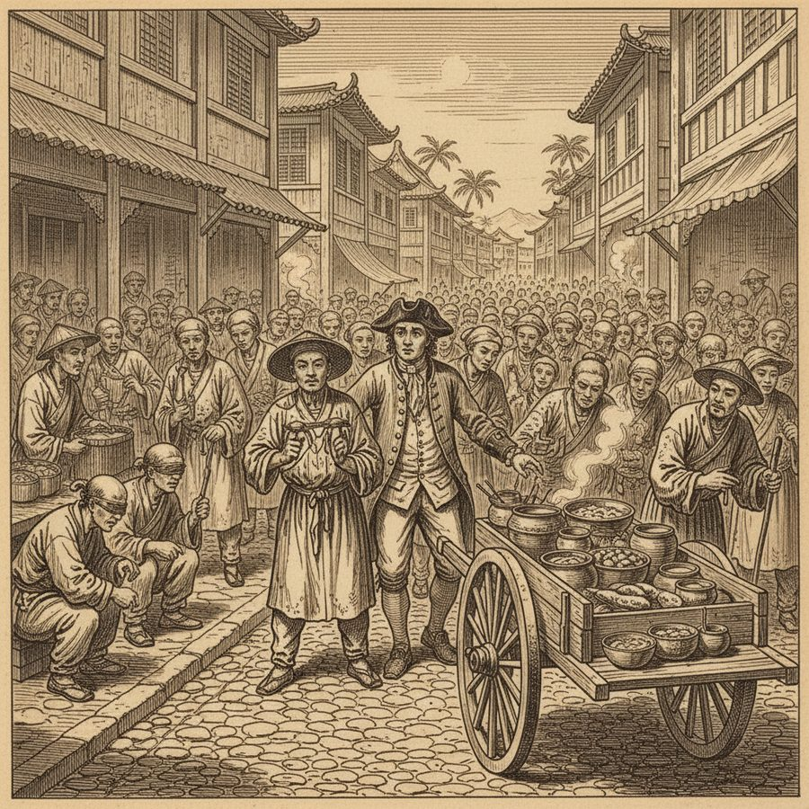
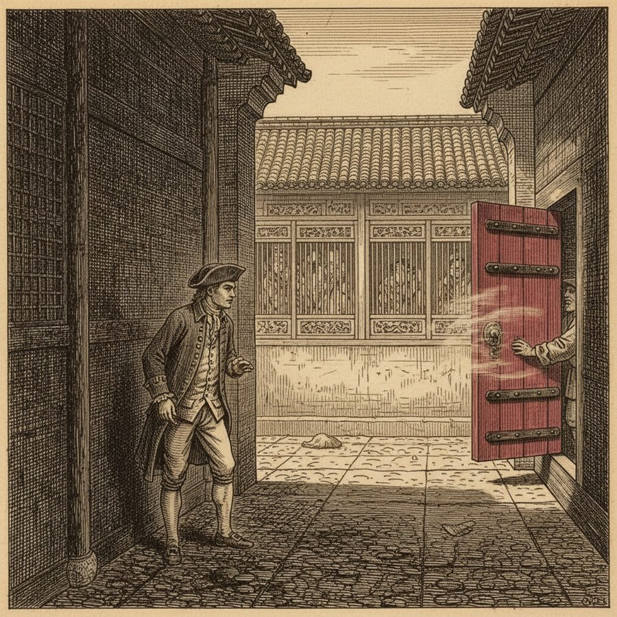
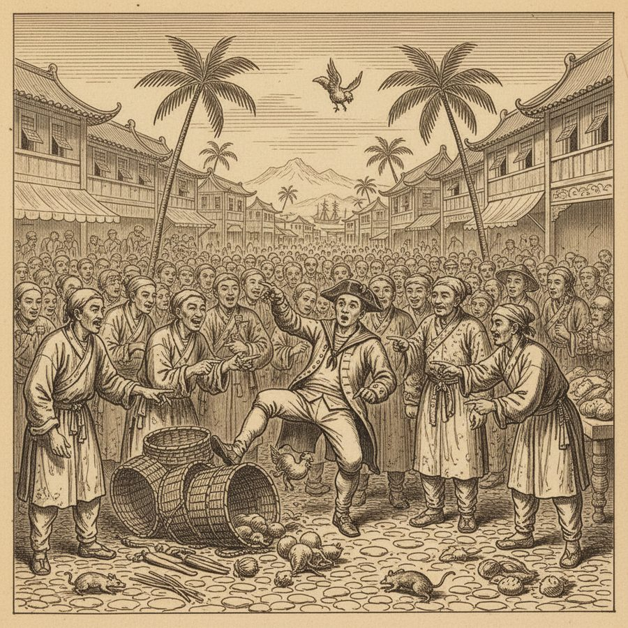
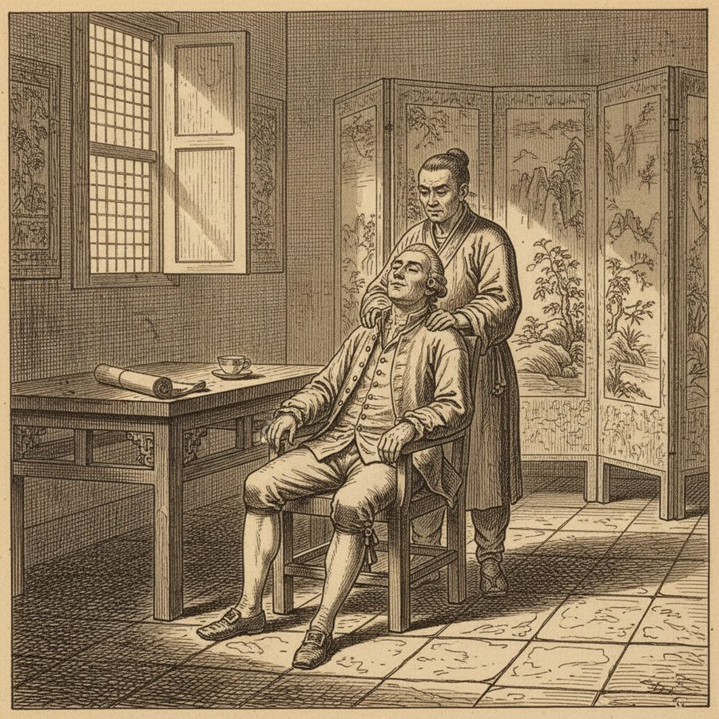

Canton Oddities — Rats for Supper and an English Sailor's Adventure
Fishes sold alive, dogs and rats in the markets, blind beggars, and an author's doomed attempt to glimpse the Chinese ladies.
Canton was the single port where the whole China trade came ashore, and Noble wanders its streets with a collector's eye for the strange and the human. Here fishes are sold alive from tubs; dogs, cats and rats are openly exhibited and bought 'as common food'; the Chinese cookery, with its cowlies hawking victuals about the streets, is a wonder by itself. Multitudes of blind beggars crowd the ways, and the rabble is famously rude to strangers. The author makes his own quixotic attempt 'to get a sight of the Chinese ladies' — and is thwarted by the strict etiquette that keeps them from foreigners. There is a 'comical adventure of an English sailor,' the great state of a chief Mandarine parading with an escort, and, for Noble himself, the strange delight of the operation that he calls 'shampoeing' at the English factory. Canton, in his pages, is teeming, exotic, alarming and endlessly entertaining — the market of a civilization just out of reach.
Figures: Noble, the Chinese of Canton, an English sailor, the Chief Mandarine
The story as a comic






Why it stands out
This is where the book turns from travelogue into a museum of 18th-century astonishment — the detail of a world (fishes alive, rats sold, ladies unseen, a sailor's caper) that a later, more knowing age could never have recorded with such fresh delight.